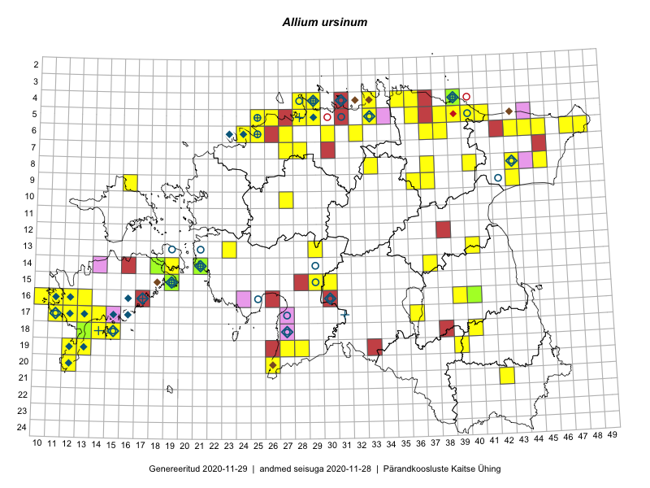

Allium ursinum
Uuendatud: 2016-12-01
Kaardile koondatud taksonid: Allium ursinum L.

Kaart põhineb 120 kirjel.
Kuvatud viited 20 esimesele andmebaasikirjele, ülejäänud PlutoFis
- Thea Kull: 2015-04-25: 05-41: ala
- Thea Kull: 2015-04-25: 05-41: ala
- Peedu Saar: 2015-05-14: 09-43: ala
- Peedu Saar: 2015-05-14: 09-43: GPS punkt
- Peedu Saar: 2015-05-14: 09-43: GPS punkt
- Toomas Kukk, Raivo Kalle: 2015-05-13: 06-38: ala
- Toomas Kukk, Raivo Kalle: 2015-05-11: 09-37: ala
- Toomas Kukk, Raivo Kalle: 2015-05-11: 09-37: GPS punkt
- Malle Leht: 2015-07-08: : ala
- Malle Leht: 2015-07-08: 19-39: GPS punkt
- Mall Hiiemäe: 2015: 08-43: ala
- Mall Hiiemäe: 2015: 13-40: ala
- Toomas Kukk: 2014-06-18: 18-14: ala
- Thea Kull, Peedu Saar: 2015-04-25: 05-41: GPS punkt
- Thea Kull, Peedu Saar: 2015-04-26: 06-45: GPS punkt
- Thea Kull, Peedu Saar: 2015-04-26: 06-47: GPS punkt
- Thea Kull, Peedu Saar: 2015-04-26: 06-48: GPS punkt
- Rein Kalamees, Kersti Püssa: 2015-06-06: 05-36: GPS punkt
- Rein Kalamees, Kersti Püssa: 2015-06-06: 05-36: ala
- Thea Kull, Peedu Saar: 2015-04-26: 06-48: ala